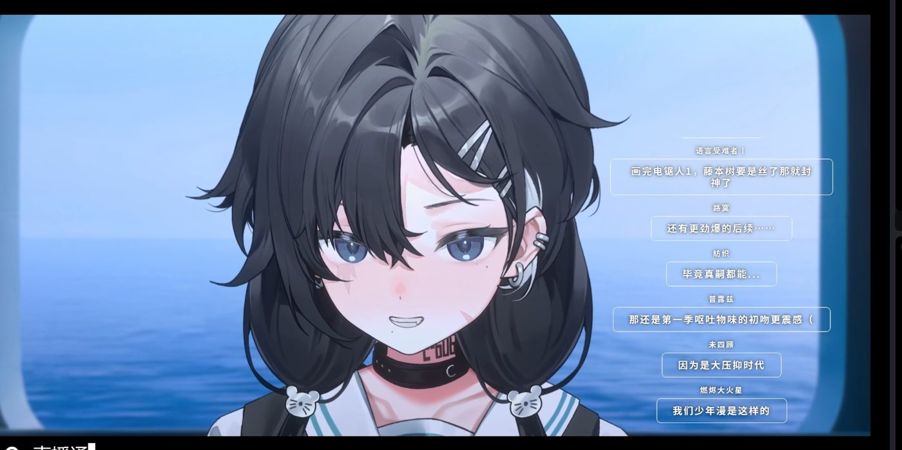
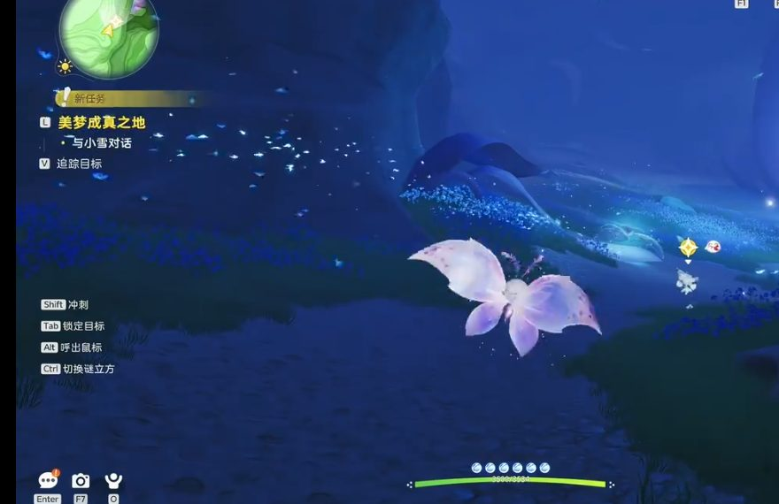

断流重连
网络抖一下，画面自己回来。卡死也能被发现。
横屏平分、大带小、弹幕布局，还有整套竖屏预设。把窗口拖成竖的， 画面墙会自己换成最合适的那一套；边框也能直接拖，比例会记住。
音量、静音、画质、左右声道，每一格单独调。断流会自己重连， 画面卡住会被发现；不需要一格格点开，状态会自己浮上来。


网络抖一下，画面自己回来。卡死也能被发现。
关注的主播上线，第一时间知道。
按平台、开播状态自动整理，不用手动翻。
扫码登录，一键导入关注列表。
每一路都能独立录制，也可以随时留下最近几分钟的即时回放。 原画直存、GPU 编码可选；关掉软件，后台 FFmpeg 一起收尾。
默认 MP4 原画直存，不重编码；需要时再切 H.264 和显卡编码。 即时回放跟着录制自动开，右键就能保存最近一段。
本体支持 B 站。虎牙、斗鱼、抖音、Twitch、YouTube 由插件接入； 官方插件商店或本地 ZIP，装完重启就能用。
虎牙、斗鱼、抖音的取流、关注卡片与平台画质档位。
Twitch 与 YouTube 的取流、关注卡片与平台画质档位。
一个 plugin.json + plugin.py 就能长出来。接入新平台、加一格右键菜单，或者把录制逻辑接出去。
插件商店在线装，或从 Releases 下载单包。
本地 ZIP 直接拖入，也支持自解压 EXE 的归档内容。
启用选择在下次启动生效，插件版本独立于本体。
安全提示 插件是普通 Python 代码，与本体同进程运行。只安装你信任的插件。